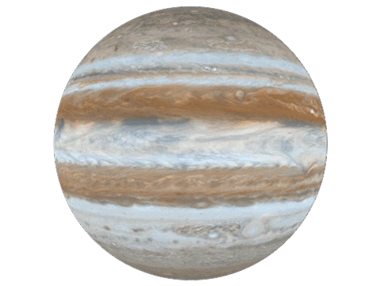
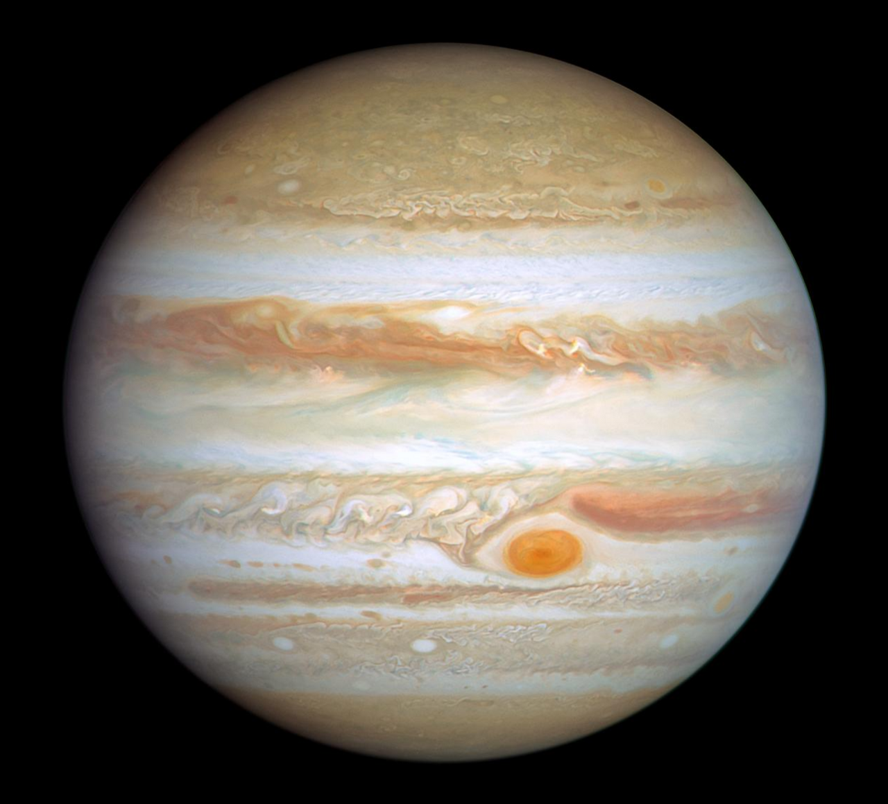

Jupiter is the fifth planet from the Sun and the largest planet in the solar system. It is a gas giant composed mainly of hydrogen and helium, and it has a mass more than twice that of all the other planets combined.
Jupiter has a diameter of about 139,820 kilometers, more than 11 times the diameter of Earth. It orbits the Sun at an average distance of about 778 million kilometers, taking almost 12 Earth years to complete one orbit.
Jupiter does not have a solid surface like Earth. Instead, it is composed primarily of hydrogen and helium gas that gradually transitions into liquid and metallic forms deeper within the planet, surrounding a possible dense core of rock and ice.
Jupiter is known for its distinctive banded clouds, caused by strong winds and differences in temperature and composition. Its most famous feature is the Great Red Spot, a giant storm that has raged for hundreds of years and is larger than Earth.
Jupiter has at least 95 known moons, including the four large Galilean moons: Io, Europa, Ganymede, and Callisto. Europa is of particular interest to scientists because it may have a subsurface ocean that could potentially support life.
Jupiter has a faint ring system, much less prominent than Saturn's, made up of small, dark particles of dust. These rings were discovered by the Voyager 1 spacecraft in 1979 and are difficult to observe from Earth.
Jupiter has been visited by several spacecraft, including Pioneer, Voyager, Galileo, and Juno, which have studied its atmosphere, magnetic field, and moons in detail. Future missions aim to explore its icy moons for signs of habitability.
